① 安装 Git
Linux 做为服务器端系统，Windows 作为客户端系统，分别安装 Git
服务器端：
[root@localhost ~]#yum install -y git
安装完后，查看 Git 版本
[root@localhost ~]# git --version
git version 1.8.3.1
客户端：
下载 Git for Windows，地址：https://git-for-windows.github.io/
安装完之后，可以使用 Git Bash 作为命令行客户端。
安装完之后，查看 Git 版本
$ git --version
git version 2.16.2.windows.1
在搭建服务前，还需要先建立git 用户与git用户组
1. 创建用户组：
$ groupadd git2. 创建用户：
$ useradd git3.给git用户设置密码
$ passwd git4.给git用户分配到git组
$ usermod -g git git
② 服务器端创建 Git 仓库
设置 /home/data/git/gittest.git 为 Git 仓库
然后把 Git 仓库的 owner 修改为 git
[root@localhost home]# mkdir -p data/git/gittest.git
[root@localhost home]# git init --bare data/git/gittest.git
Initialized empty Git repository in /home/data/git/gittest.git/
[root@localhost home]# cd data/git/
[root@localhost git]# chown -R git:git gittest.git/
③ 客户端 clone 远程仓库
在windows端进入 Git Bash 命令行客户端，创建项目地址（设置在 d:/wamp64/www/gittest_gitbash）并进入:
dee@Lenovo-PC MINGW64 /d
$ cd wamp64/www
dee@Lenovo-PC MINGW64 /d/wamp64/www
$ mkdir gittest_gitbash
dee@Lenovo-PC MINGW64 /d/wamp64/www
$ cd gittest_gitbash
dee@Lenovo-PC MINGW64 /d/wamp64/www/gittest_gitbash
$
然后从 Linux Git 服务器上 clone 项目：
$ git clone git@192.168.56.101:/home/data/gittest.git
如果SSH用的不是默认的22端口，则需要使用以下的命令（假设SSH端口号是7700）：
$ git clone ssh://git@192.168.56.101:7700/home/data/gittest.git
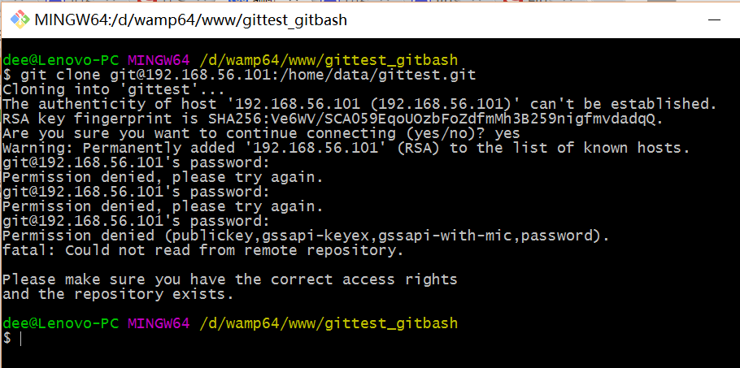
当第一次连接到目标 Git 服务器时会得到一个提示：
The authenticity of host '192.168.56.101 (192.168.56.101)' can't be established.
RSA key fingerprint is SHA256:Ve6WV/SCA059EqoUOzbFoZdfmMh3B259nigfmvdadqQ.
Are you sure you want to continue connecting (yes/no)?
选择 yes：
Warning: Permanently added '192.168.56.101' (RSA) to the list of known hosts.
此时 C:\Users\用户名.ssh 下会多出一个文件 known_hosts，以后在这台电脑上再次连接目标 Git 服务器时不会再提示上面的语句。
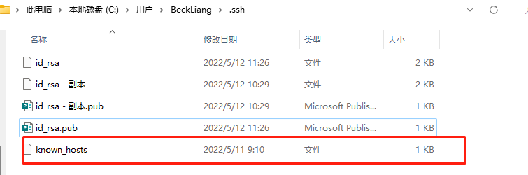
后面提示要输入密码，可以采用 SSH 公钥来进行验证。
④ 客户端创建 SSH 公钥和私钥
$ ssh-keygen -t rsa -C "123456789@qq.com"
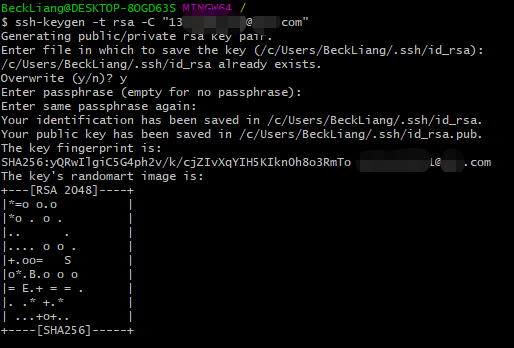
此时 C:\Users\用户名.ssh 下会多出两个文件 id_rsa 和 id_rsa.pub
id_rsa 是私钥
id_rsa.pub 是公钥
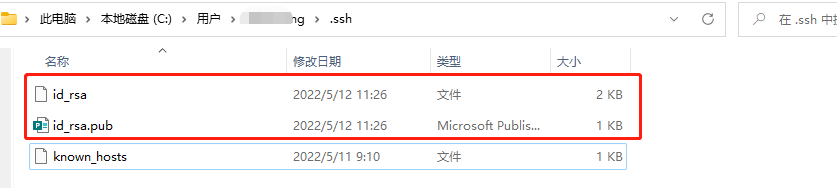
⑤ 服务器端 Git 打开 RSA 认证
进入 /etc/ssh 目录，编辑 sshd_config，打开以下三个配置的注释：
RSAAuthentication yes
PubkeyAuthentication yes
AuthorizedKeysFile .ssh/authorized_keys
保存并重启 sshd 服务：
[root@localhost ssh]# systemctl restart sshd
由 AuthorizedKeysFile 得知公钥的存放路径是 .ssh/authorized_keys，实际上是$Home/.ssh/authorized_keys，由于管理 Git 服务的用户是 git，所以实际存放公钥的路径是 /home/git/.ssh/authorized_keys
在 /home/git/ 下创建目录 .ssh
[root@localhost git]# pwd
/home/git
[root@localhost git]# mkdir .ssh
[root@localhost git]# ls -a
. .. .bash_logout .bash_profile .bashrc .gnome2 .mozilla .ssh
然后把 .ssh 文件夹的 owner 修改为 git
[root@localhost git]# chown -R git:git .ssh
[root@localhost git]# ll -a
总用量 32
drwx------. 5 git git 4096 8月 28 20:04 .
drwxr-xr-x. 8 root root 4096 8月 28 19:32 ..
-rw-r--r--. 1 git git 18 10月 16 2014 .bash_logout
-rw-r--r--. 1 git git 176 10月 16 2014 .bash_profile
-rw-r--r--. 1 git git 124 10月 16 2014 .bashrc
drwxr-xr-x. 2 git git 4096 11月 12 2010 .gnome2
drwxr-xr-x. 4 git git 4096 5月 8 12:22 .mozilla
drwxr-xr-x. 2 git git 4096 8月 28 20:08 .ssh
⑥ 将客户端公钥导入服务器端 /home/git/.ssh/authorized_keys 文件
将客户端的公钥上传到liunx服务器
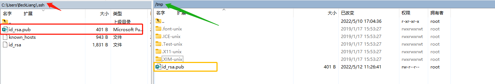
回到服务器端，查看 .ssh 下是否存在 authorized_keys 文件，没有的话手动创建【touch authorized_keys】
[root@localhost git]# cd .ssh
[root@localhost .ssh]# ll
总用量 4
-rw-rw-r--. 1 git git 398 8月 28 20:08 authorized_keys
将tmp目录下的公钥追加到/home/git/.ssh/authorized_keys中
cat /tmp/id_rsa.pub >> /home/git/.ssh/authorized_keys
如果需要管理多人的权限，就多人的公钥以此种方式追加到/home/git/.ssh/authorized_keys文件里面就行了
重要：
修改 .ssh 目录的权限为 700
修改 .ssh/authorized_keys 文件的权限为 600
[root@localhost git]# chmod 700 .ssh
[root@localhost git]# cd .ssh
[root@localhost .ssh]# chmod 600 authorized_keys
⑦ 客户端再次 clone 远程仓库
$ git clone git@192.168.56.101:/home/data/git/gittest.git
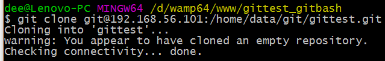
查看客户端项目目录：
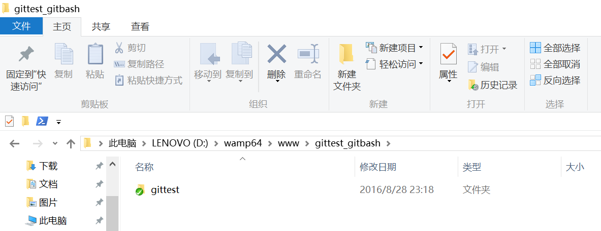
也可以使用 tortoiseGit 客户端来管理项目：
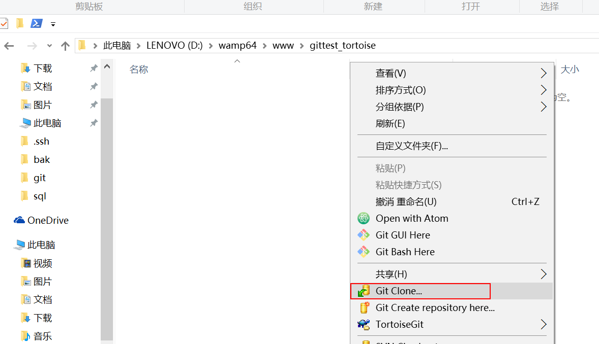
clone
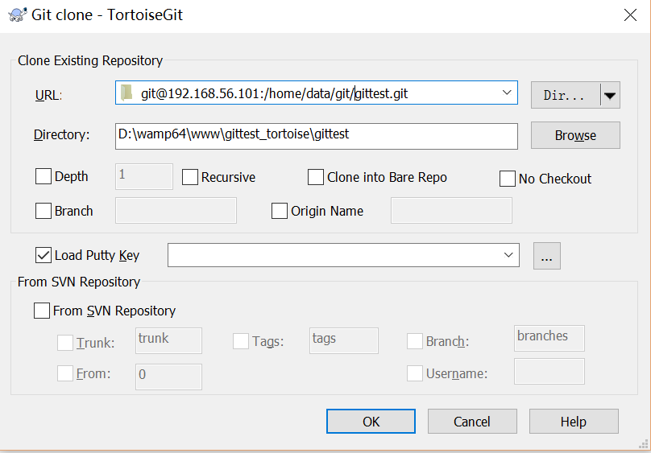
⑧ 禁止 git 用户 ssh 登录服务器
之前在服务器端创建的 git 用户不允许 ssh 登录服务器
编辑 /etc/passwd
找到：
git:x:502:504::/home/git:/bin/bash
修改为
git:x:502:504::/home/git:/bin/git-shell
此时 git 用户可以正常通过 ssh 使用 git，但无法通过 ssh 登录系统。
git bash下中文乱码解决办法：
一.解决办法1：(直接上图)
1.在git bash下，右键出现下图，选择options：
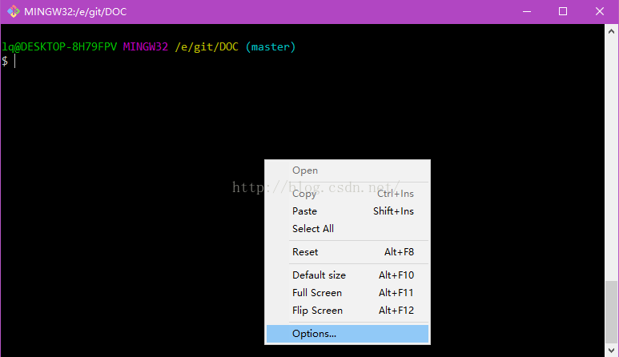
2.选择”Text”
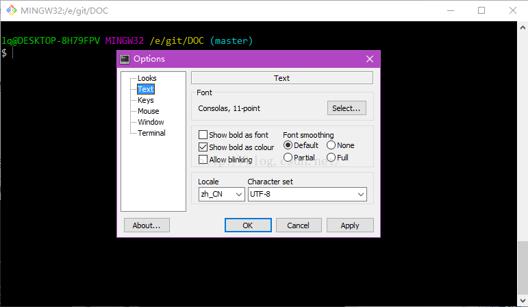
3.将”Character set”设置为 UTF-8
另外一种解决方法：
git命令行执行以下命令：
$ git config --global core.quotepath false
$ echo $LANG
$ export LANG="zh_CN.UTF-8"
3行命令执行完，可以正常显示中文了。